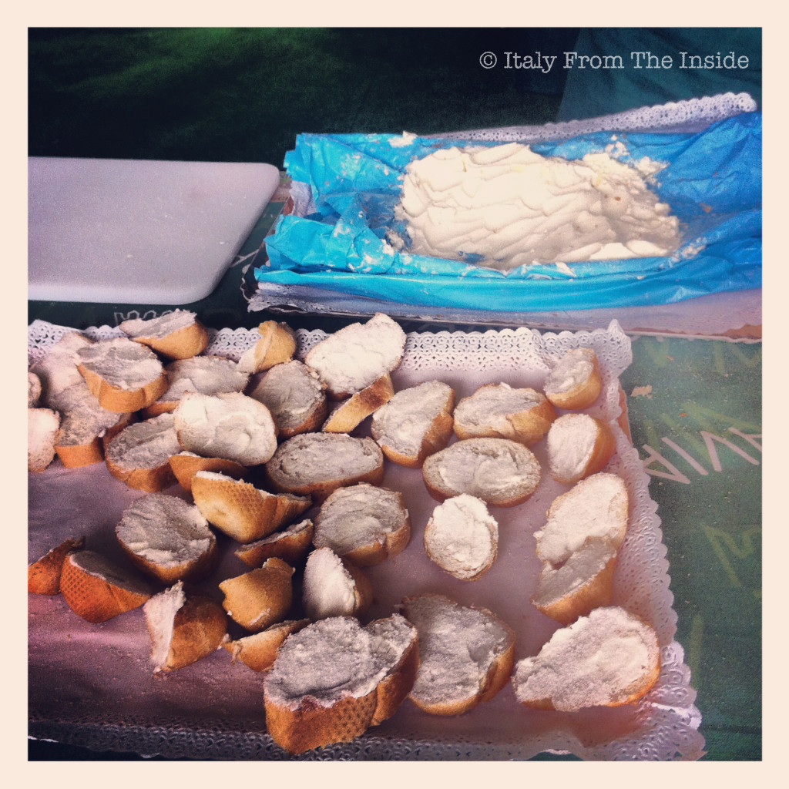

One day I told my son Alessio that a very fond memory I have from my childhood is that of a family friend who used to make a snack for her kids by spreading creamy butter on some fresh bread and sprinkling it with a pinch of sugar. He soon wanted to try it and loved it ever since. Easy to make and rich in taste, pane, burro e zucchero is a yummy alternative to the peanut butter and jelly sandwich. Provare per credere (try it to believe it).